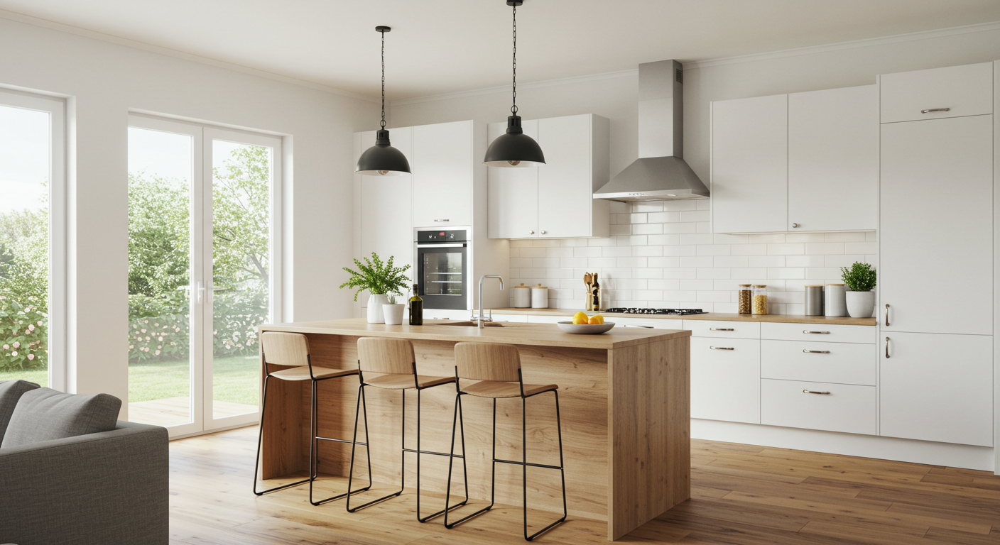
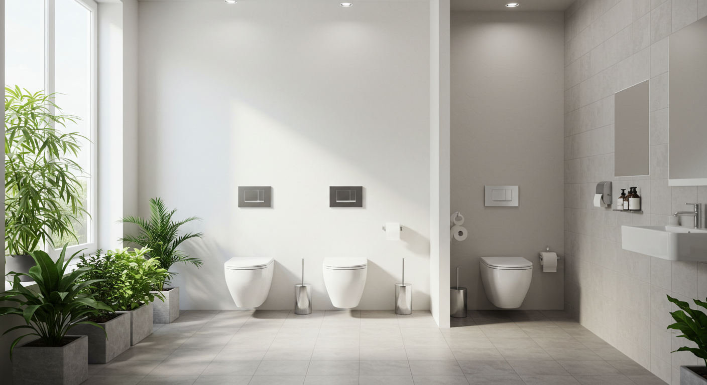
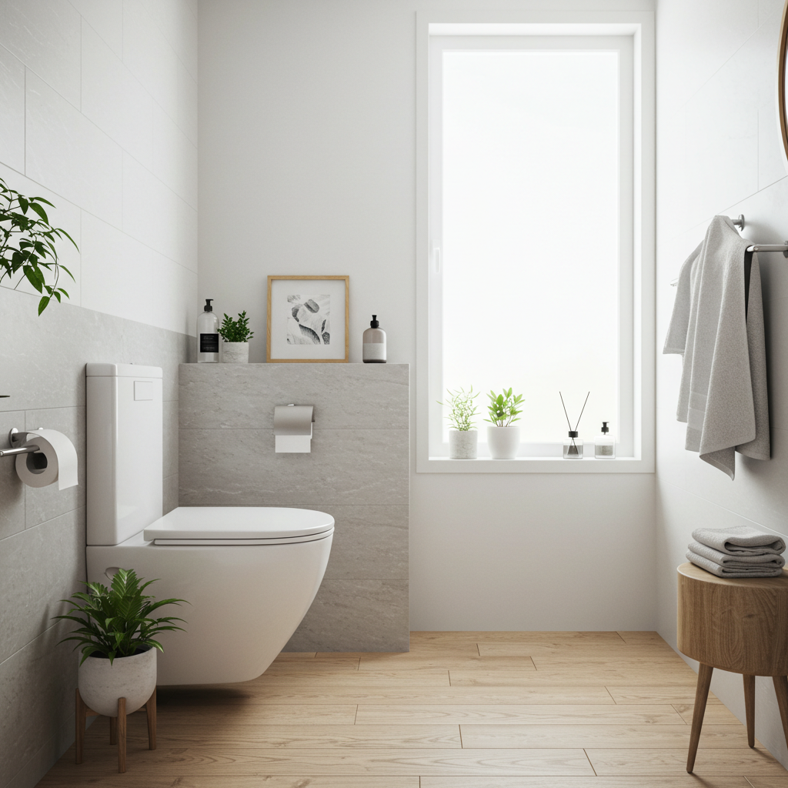
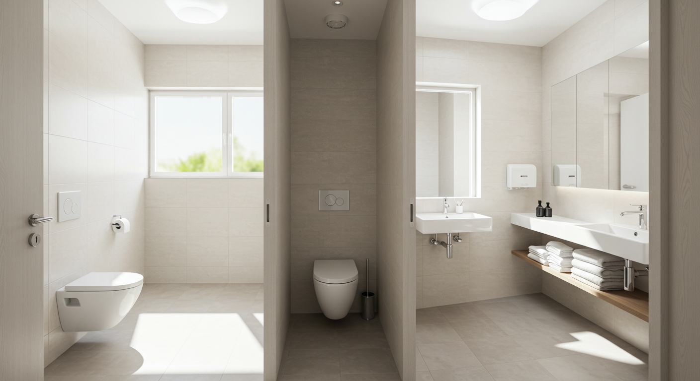
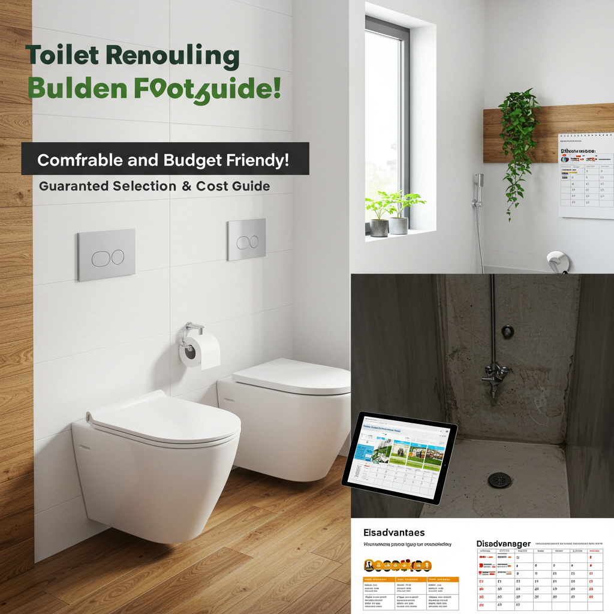
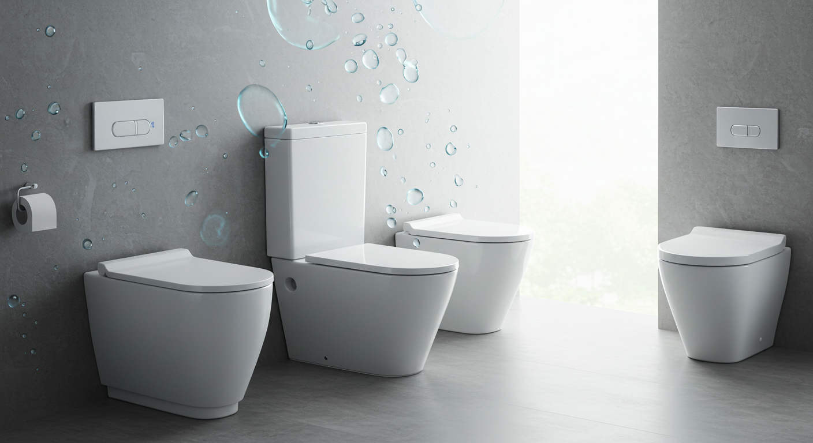
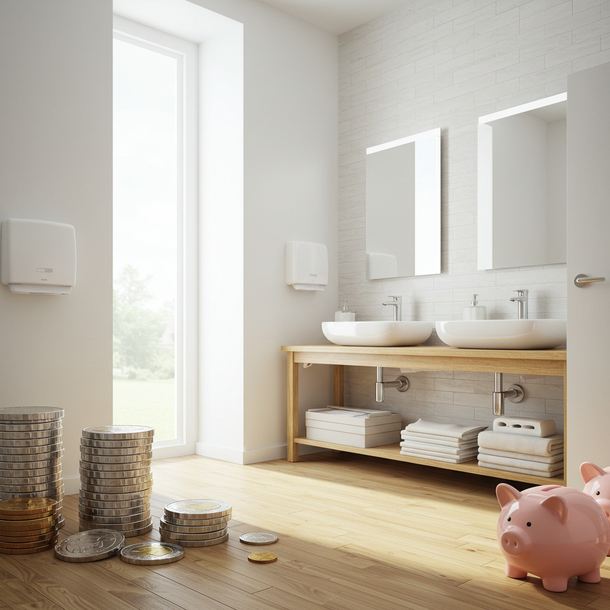
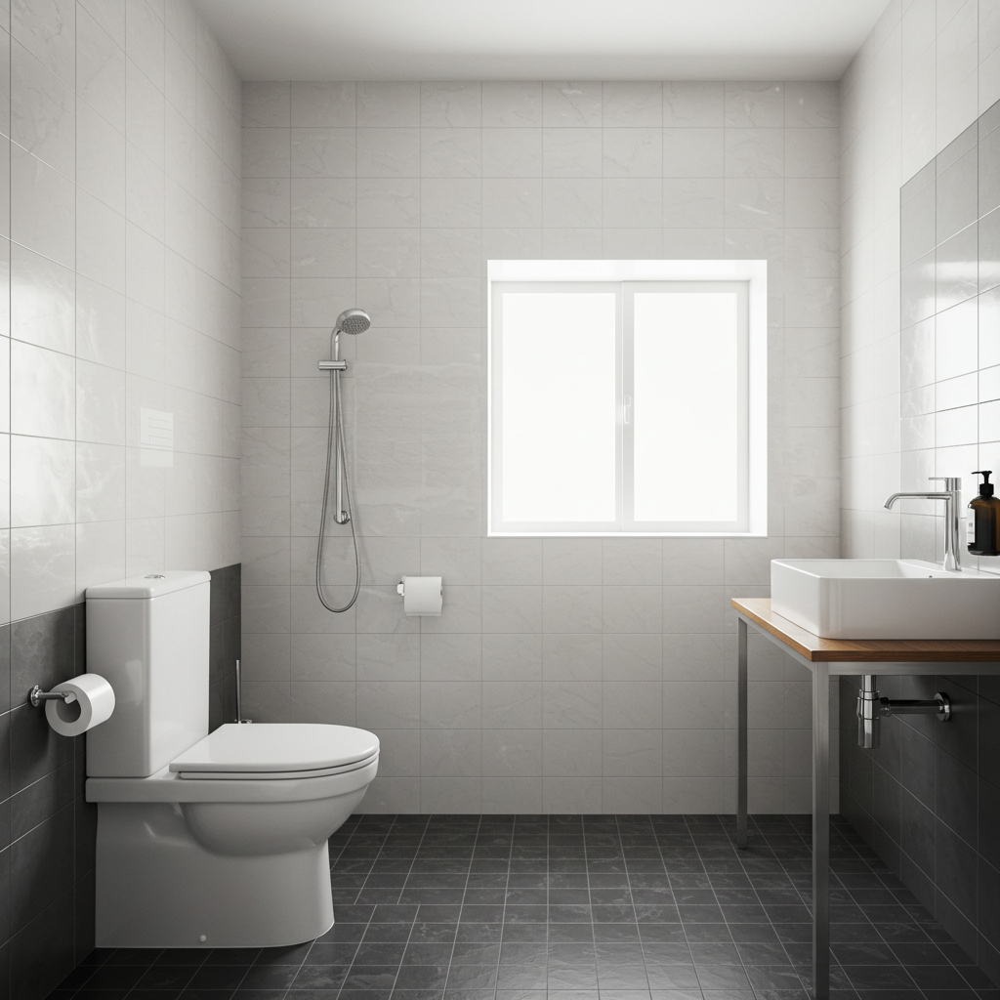
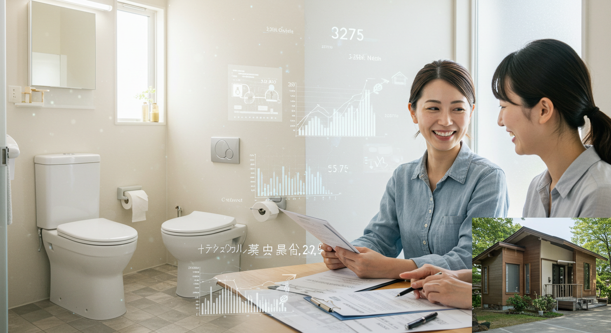

【リフォームトイレ】快適で家計に優しい！失敗しない選び方と費用ガイド

導入

毎日、家族みんなが何度も使う場所、それがトイレです。私たちの暮らしに欠かせないこの空間が、もし今よりもっと快適で、清潔で、さらには家計にも優しくなるとしたら、いかがでしょうか。
「最近、トイレの汚れが落ちにくくなってきたな…」
「水道代が気になるけれど、節水ってどうすればいいんだろう？」
「家族が高齢になってきたから、もっと使いやすいトイレにしたい」
もし、あなたが今、こんな風に感じているのなら、トイレのリフォームを考えてみる絶好のタイミングかもしれません。
一昔前のトイレと比べて、現在のトイレは驚くほど進化しています。ボタン一つで便器がピカピカになる自動洗浄機能、少ない水量でパワフルに洗い流す節水技術、寒い冬でも心地よい暖房便座や、気になるニオイを自動で消してくれる脱臭機能など、まるで未来のトイレが現実になったかのようです。
しかし、いざリフォームを考え始めると、「どんなトイレを選べばいいの？」「費用は一体いくらかかるんだろう？」「工事って大変そう…」「信頼できる業者さんってどうやって見つけるの？」といった、たくさんの疑問や不安が湧いてくるのも事実です。高価な買い物だからこそ、絶対に失敗したくない、そう思うのは当然のことでしょう。
この記事は、そんなあなたのための「トイレリフォームの教科書」です。トイレリフォームのメリット・デメリットといった基本的な知識から、最新トイレの具体的な機能、失敗しない選び方のポイント、気になる費用相場とコストを抑えるコツ、工事の流れ、そして何よりも大切な信頼できる業者の見つけ方まで、あなたが知りたい情報を一つひとつ、丁寧に、そして分かりやすく解説していきます。
この記事を最後までお読みいただければ、トイレリフォームに関する漠然とした不安は、理想のトイレ空間を実現するための具体的な計画へと変わっているはずです。さあ、私たちと一緒に、あなたの暮らしをより豊かにする、快適で家計に優しいトイレリフォームへの第一歩を踏み出してみませんか？
リフォームトイレを考えるあなたへ！快適な毎日を手に入れる第一歩

「トイレのリフォーム」と聞くと、少し大げさに聞こえるかもしれません。しかし、考えてみてください。私たちは一日に平均して5回から8回もトイレを利用すると言われています。これは、一年間で約2,000回以上にもなる計算です。つまり、トイレは家の中で最も使用頻度の高いプライベートな空間の一つなのです。
そんな大切な場所が、もし「掃除が面倒」「なんだか暗くて落ち着かない」「冬は便座が冷たくてつらい」といった小さなストレスの源になっているとしたら、それはとても残念なことです。日々の暮らしの中で無意識に感じているその小さな不満は、積み重なることで、心の負担になっているかもしれません。
トイレリフォームは、単に古くなった便器を新しく交換するだけの作業ではありません。それは、毎日の暮らしの質を格段に向上させるための、未来への投資です。
例えば、最新のトイレは、汚れがつきにくく、落ちやすい素材で作られています。フチ裏の複雑な形状がなくなり、サッとひと拭きで掃除が終わるようになれば、これまでトイレ掃除に費やしてきた時間と労力を、もっと他の楽しいこと、好きなことに使えるようになります。週末の貴重な時間を、ゴシゴシとブラシを握りしめて過ごす必要はもうありません。
また、驚くほどの節水性能は、環境に優しいだけでなく、毎月の水道代という形であなたの家計を直接サポートしてくれます。リフォームにかかる初期費用も、長い目で見れば、日々の節約によって十分に元が取れるかもしれません。「ちりも積もれば山となる」という言葉の通り、毎日のわずかな節水が、数年後には大きな差となって現れるのです。
さらに、家族構成の変化に対応できるのもリフォームの大きな魅力です.小さなお子様がいるご家庭では、自動でフタが開閉する機能が衛生的で便利ですし、ご高齢の家族と暮らしている場合は、立ち座りをサポートする手すりを設置したり、夜中でも安心して使えるように足元灯をつけたりすることで、安全で快適な空間へと生まれ変わらせることができます。
トイレは、一日の始まりと終わりに、そして一息つきたい時に訪れる、心と体をリセットするための大切な場所です。その空間が、美しく、清潔で、機能的であることは、私たちの心に安らぎと満足感を与えてくれます。お気に入りのデザインの壁紙を選んだり、間接照明で落ち着いた雰囲気を演出したりと、あなただけのこだわりの空間を創り出す楽しみも、リフォームならではの醍醐味と言えるでしょう。
今、あなたが感じているトイレへの小さな不満は、リフォームによって解消できる可能性が非常に高いのです。この記事を通して、最新のトイレがもたらす素晴らしい変化を知り、あなたの理想のトイレ空間を実現するための具体的なイメージを膨らませてみてください。快適な毎日を手に入れるための第一歩は、ここから始まります。
トイレリフォームのメリット

トイレリフォームを検討する上で、具体的にどのような良いことがあるのかを知ることは、決断への大きな後押しとなります。ここでは、最新のトイレがもたらす４つの大きなメリットについて、詳しく見ていきましょう。きっと、「こんなに便利になるんだ！」と驚かれるはずです。
メリット１．掃除が格段に楽になる最新機能
トイレリフォームで最も多くの方が実感するのが、「掃除のしやすさ」です。従来のトイレ掃除は、屈んでブラシを使い、見えにくいフチの裏側をゴシゴシとこするなど、時間も手間もかかる大変な作業でした。しかし、最新のトイレには、この掃除の負担を劇的に軽減してくれる画期的な機能が満載です。
フチなし形状（フチレス形状）
まず、最も大きな変化が便器の形状です。かつてのトイレには、便器のフチの裏側に返しがあり、そこに汚れやカビが溜まりやすく、掃除が非常に困難でした。最新のトイレの多くは、このフチをなくした「フチなし（フチレス）」形状を採用しています。これにより、汚れが隠れる場所がなくなり、トイレクリーナーでサッとひと拭きするだけで、便器の隅々まで簡単にきれいにすることができます。TOTOの「フチなし形状」やLIXILの「フチレス形状」などが代表的で、もはや現在のトイレのスタンダードと言える機能です。
汚れがつきにくい新素材
便器自体の素材も大きく進化しています。陶器の表面をナノレベルで滑らかにすることで、汚れの元となる水垢や汚物がこびりつくのを防ぎます。例えば、TOTOの「セフィオンテクト」は、陶器表面に特殊なガラス層を焼き付けることで、優れた防汚性・耐久性を実現しています。また、LIXILの「アクアセラミック」は、水に馴染みやすい性質（超親水性）を持っており、便器に付着した汚れの下に水が入り込み、汚れを浮かせて洗い流すことができます。これにより、新品の時の白さ、輝きが100年続くとも言われています。Panasonicの「アラウーノ」シリーズでは、航空機の窓などにも使われる有機ガラス系の新素材「スゴピカ素材（有機ガラス系）」を採用しており、水垢が固着しにくく、撥水性も高いため、汚れがつきにくいのが特徴です。
自動洗浄・除菌機能
さらに、トイレ自身が自動で清潔を保ってくれる機能も登場しています。TOTOの「きれい除菌水」は、水道水に含まれる塩化物イオンを電気分解して作られる、洗剤や薬品を使わない安全な除菌水です。トイレ使用後や、8時間使用しない時に、便器ボウル面やウォシュレットのノズルに自動で吹きかけ、見えない菌や汚れを分解・除菌してくれます。これにより、黒ずみや輪じみの発生を抑え、日々の掃除の手間を大幅に減らすことができます。Panasonicの「アラウーノ」では、トイレを流すたびに2種類の泡が便器内をめぐり、汚れを落とす「激落ちバブル」や、泡と水流で飛びハネ汚れを抑える機能など、ユニークなアプローチで清潔さを保ちます。
これらの革新的な機能により、これまで「面倒で、できればやりたくない家事」の代表格だったトイレ掃除が、驚くほど簡単で手軽なものに変わります。清潔なトイレは、家族みんなが気持ちよく使えるだけでなく、来客時にも自信を持って案内できる、自慢の空間になることでしょう。
メリット２．家計に優しい節水効果で水道代を削減
毎日使うトイレだからこそ、水道代への影響は決して小さくありません。もし、あなたが15年以上前のトイレをお使いの場合、リフォームすることで、年間の水道代を大幅に節約できる可能性があります。
日本のトイレの節水技術は世界でもトップクラスであり、その進化は目覚ましいものがあります。1990年代頃のトイレでは、1回の洗浄（大）に約13リットルもの水を使用していました。これは、2リットルのペットボトル6本半分に相当する量です。これが、最新の節水型トイレになると、どう変わるのでしょうか。
現在の主要メーカーのトイレは、大洗浄で3.8リットル～4.8リットル、小洗浄では3.0リットル～3.6リットル程度の水量で、パワフルに洗い流すことができます。13リットルのトイレと比較すると、1回あたりの洗浄水量は約3分の1以下。これは、驚異的な節水性能です。
では、具体的にどれくらいの節約になるのか、簡単なシミュレーションをしてみましょう。
【シミュレーション条件】
- 4人家族（男性2人、女性2人）
- 1人あたりのトイレ使用回数：大1回、小3回／日
- 水道料金・下水道使用料：1リットルあたり0.24円（東京都水道局の目安）
＜15年以上前のトイレ（洗浄水量13L）の場合＞
- 1日の使用水量：(13L × 1回 + 13L × 3回) × 4人 = 208L
- 1年間の使用水量：208L × 365日 = 75,920L
- 1年間の水道代：75,920L × 0.24円/L = 約18,220円
＜最新の節水型トイレ（大4.8L、小3.6L）の場合＞
- 1日の使用水量：(4.8L × 1回 + 3.6L × 3回) × 4人 = 62.4L
- 1年間の使用水量：62.4L × 365日 = 22,776L
- 1年間の水道代：22,776L × 0.24円/L = 約5,466円
このシミュレーションによると、年間の水道代の差額は、なんと約12,754円にもなります。10年間使い続ければ、12万円以上の節約になる計算です。もちろん、これはあくまで一例であり、家族の人数や使用状況によって金額は変動しますが、トイレリフォームが長期的に見て非常に経済的であることがお分かりいただけるでしょう。
リフォームには初期費用がかかりますが、このように毎月の水道代が安くなることで、その費用の一部を回収できると考えることができます。環境保護に貢献しながら、家計の負担も軽減できる。これこそが、節水型トイレがもたらす大きなメリットなのです。
メリット３．家族みんなが快適に使える空間へ
トイレは、家族全員が使う共有スペースです。だからこそ、小さなお子様からご高齢の方まで、誰もが安全で快適に使える空間であることが理想的です。トイレリフォームは、そんな「ユニバーサルデザイン」の視点を取り入れる絶好の機会でもあります。
暖房便座・温水洗浄便座
今や多くのご家庭で標準装備となっていますが、寒い冬の朝、便座に座った時の「ヒヤッ」とする感覚は、なかなかのストレスです。暖房便座は、そんな不快感を解消し、一年中快適な座り心地を提供してくれます。また、温水洗浄機能は、清潔さを保つだけでなく、トイレットペーパーの使用量を減らすことにも繋がり、お肌への負担も軽減します。痔の悩みをお持ちの方や、デリケートな肌の方にとっても、なくてはならない機能と言えるでしょう。
自動開閉・自動洗浄機能
便器に近づくとセンサーが感知して自動でフタが開き、離れると自動で閉まる「オート開閉」機能は、手を触れずに済むため非常に衛生的です。特に、フタの閉め忘れが多いご家庭では、暖房便座の節電にも繋がります。また、便座から立ち上がると自動で水を流してくれる「オート洗浄」機能は、流し忘れを防ぐのに役立ちます。小さなお子様や、つい忘れがちな方にとっても便利な機能です。
脱臭・消臭機能
トイレの悩みで常に上位に挙がるのが「ニオイ」の問題です。最新のトイレには、強力な脱臭機能が搭載されています。便座に座ると自動で脱臭ファンが作動し、使用中から使用後まで、気になるニオイをしっかりと吸引・分解してくれます。これにより、次に入る人への配慮ができるだけでなく、トイレ空間全体を常に爽やかに保つことができます。芳香剤や消臭スプレーに頼る必要がなくなるかもしれません。
バリアフリーへの対応
ご高齢の家族がいらっしゃるご家庭では、安全性への配慮が特に重要になります。トイレリフォームを機に、手すりを設置することで、立ち座りの動作が格段に楽になり、転倒のリスクを減らすことができます。また、夜中にトイレに行く際の安全を確保するために、便器に近づくと自動で点灯する「やわらかライト（夜間照明）」も非常に便利です。ドアを引き戸に変更したり、段差を解消したりといった、より本格的なバリアフリーリフォームも、トイレの交換と同時に行うことで、効率的に進めることができます。
このように、トイレリフォームは、現在の家族構成だけでなく、将来の変化も見据えて、家族みんなが長く安心して使える空間を作るための大切なステップなのです。
メリット４．デザイン性・機能性の向上で満足度アップ
トイレは、もはや単に用を足すだけの場所ではありません。一日に何度も訪れるプライベートな空間だからこそ、デザイン性や居心地の良さも、暮らしの満足度を左右する重要な要素です。
洗練されたデザイン
最新のトイレ、特にタンクレストイレは、そのスッキリとしたミニマルなデザインが大きな魅力です。水を溜めるタンクがないため、空間に圧迫感を与えず、トイレ全体を広く見せる効果があります。直線的で美しいフォルムは、まるで高級ホテルのパウダールームのような、洗練された雰囲気を演出してくれます。タンクがないことで、これまでデッドスペースになりがちだった便器の後ろ側も掃除がしやすくなるという、実用的なメリットもあります。
空間コーディネートの楽しみ
トイレ本体のデザインだけでなく、リフォームを機に壁紙（クロス）や床材（クッションフロア）を新しくすることで、空間の印象をガラリと変えることができます。落ち着いた色合いでリラックスできる空間にしたり、大胆な柄物で個性的な空間を演出したりと、選択肢は無限大です。小さな空間だからこそ、普段は挑戦しにくいデザインにも気軽にチャレンジできるのが、トイレリフォームの楽しいところです。また、手洗い器を独立させてカウンターを設け、そこに小さな花や小物を飾るだけで、一気におしゃれな空間へと生まれ変わります。
収納力の向上
トイレットペーパーのストックや掃除用品、サニタリー用品など、トイレ空間は意外と物が多く、収納に困りがちです。リフォームの際には、壁面に埋め込み式の収納棚を設置したり、タンクレストイレと手洗いカウンターを組み合わせたシステムトイレを選んだりすることで、これらの物をスッキリと隠して収納することができます。生活感が出やすいアイテムを隠すことで、空間全体が整然とし、より上質で落ち着いた雰囲気を保つことができます。
トイレは、お客様が利用する機会も多い場所です。美しく、清潔で、快適なトイレは、家全体の印象を良くし、おもてなしの心を伝えることにも繋がります。毎日の生活の中で、お気に入りの空間で過ごす時間は、ささやかながらも確かな幸福感をもたらしてくれるはずです。機能性だけでなく、デザイン性にもこだわることで、トイレリフォームの満足度はさらに高まることでしょう。
トイレリフォームのデメリット

多くのメリットがある一方で、トイレリフォームにはいくつかのデメリットや注意すべき点も存在します。これらを事前に理解し、対策を考えておくことで、後悔のないリフォームを実現することができます。ここでは、正直にデメリットの部分にも目を向けてみましょう。
デメリット１．初期費用が高くなる可能性がある
トイレリフォームを考える上で、最も大きなハードルとなるのが費用面でしょう。当然ながら、便器の交換や内装工事には、ある程度のまとまった初期費用が必要となります。
費用の内訳
トイレリフォームの費用は、大きく分けて「トイレ本体の価格」と「工事費」で構成されます。
- トイレ本体の価格: 選ぶトイレのタイプやグレードによって、価格は大きく異なります。シンプルな機能の組み合わせトイレであれば5万円前後からありますが、多機能な一体型トイレやデザイン性の高いタンクレストイレになると、20万円、30万円を超えるものも珍しくありません。
- 工事費: 現在のトイレの撤去・処分費、新しいトイレの設置費、給排水管の接続費などが含まれる「基本工事費」がまずかかります。これに加えて、床や壁の内装工事を行う場合は、その費用が追加されます。また、コンセントの増設や手すりの設置、和式から洋式への変更など、工事の内容が複雑になるほど、費用は高くなります。
費用の目安
最もシンプルな便器交換のみであれば10万円～20万円程度が相場ですが、内装工事も含む一般的なリフォームでは20万円～40万円程度、タンクレストイレの導入や手洗い器の新設など、こだわりのリフォームになると50万円以上かかるケースもあります。
考え方と対策
この初期費用は、決して安い金額ではありません。しかし、前述したように、最新のトイレは優れた節水性能を持っています。長期的に見れば、毎月の水道代の節約によって、かかった費用の一部を回収できる可能性があります。また、掃除の手間が省けることで生まれる「時間」や、毎日快適に過ごせる「心の満足感」は、金額では測れない価値があるとも言えるでしょう。
費用を抑えるためには、複数のリフォーム会社から見積もりを取り、内容と金額を比較検討することが非常に重要です。また、国や自治体が実施しているリフォームに関する補助金制度（介護保険の住宅改修費や、自治体独自の子育て支援・省エネ関連の補助金など）が利用できる場合もあります。こうした制度を上手に活用することで、負担を軽減することが可能です。まずは、自分の希望するリフォームにどれくらいの費用がかかるのか、具体的な見積もりを取ってみることから始めましょう。
デメリット２．一時的にトイレが使えない期間が発生する
リフォーム工事中は、当然ながら自宅のトイレを使用することができなくなります。これは、生活する上で非常に大きな制約となり、多くの方が不安に感じる点です。
工事期間の目安
工事の内容によって、トイレが使えない期間は異なります。
- 洋式トイレから洋式トイレへの交換のみ: 最もシンプルな工事で、半日～1日程度で完了することがほとんどです。朝から作業を始めれば、夕方には新しいトイレが使えるようになります。
- 内装工事（床・壁）も含む場合: 便器の交換に加えて、床のクッションフロアや壁紙の張り替えを行う場合、1日～2日程度かかることが一般的です。
- 和式トイレから洋式トイレへの変更: 床や壁の解体、給排水管の移設など、大掛かりな工事が必要となるため、2日～4日程度かかる場合があります。
工事期間中の対策
この「トイレが使えない時間」をどう乗り切るかが、リフォームをスムーズに進めるための鍵となります。
- 近隣の利用可能なトイレを把握しておく: 工事が始まる前に、近くの公園、コンビニエンスストア、スーパーマーケット、駅など、公共のトイレの場所を確認しておきましょう。特に、小さなお子様やご高齢の方がいるご家庭では、複数の選択肢を用意しておくと安心です。
- 簡易トイレ・ポータブルトイレの準備: ホームセンターやインターネット通販で、災害時用の簡易トイレや、介護用のポータブルトイレを購入・レンタルするという方法もあります。特に、夜間や早朝にトイレが使えないのは不便なため、一つ用意しておくと精神的な負担が大きく軽減されます。リフォーム業者によっては、工事期間中にポータブルトイレを貸し出してくれる場合もあるので、事前に相談してみましょう。
- 工事日程の調整: 家族の生活リズムを考慮して、工事の日程を調整することも大切です。例えば、家族が日中ほとんど外出している平日に工事を依頼する、あるいは、実家や親戚の家に一時的に滞在するなど、ライフスタイルに合わせた計画を立てましょう。
工事期間中の不便さは避けられませんが、事前にしっかりと計画を立て、対策を講じておくことで、ストレスを最小限に抑えることができます。リフォーム業者と工事のスケジュールや期間について、事前に詳しく打ち合わせを行っておくことが重要です。
デメリット３．設置スペースや配管に制約がある場合
「最新のタンクレストイレにしたい！」と思っても、現在のトイレの設置状況によっては、希望のトイレが設置できない、あるいは追加の工事が必要になるケースがあります。
スペースの制約
タンクレストイレは、便器本体がコンパクトなため、狭い空間にも設置しやすいと思われがちですが、注意点があります。それは、独立した手洗い器を新たに設置する必要があることです。トイレ空間内に手洗い器を設置する十分なスペースがなければ、トイレを出た近くの洗面所まで手を洗いに行くことになります。これを不便に感じる場合は、タンクと手洗い器が一体になった従来型のトイレを選ぶか、省スペースで設置できるコンパクトな手洗い器を選ぶ必要があります。
配管の位置（排水方式）
トイレの排水管には、床に向かって排水する「床排水」と、壁に向かって排水する「壁排水」の2種類があります。戸建て住宅の多くは床排水、マンションなどでは壁排水が採用されていることが多いです。
- 床排水: 便器の後ろから壁までの距離（排水芯）が重要になります。この距離が、新しく設置するトイレの仕様と合わない場合、「リモデル（リフォーム）タイプ」と呼ばれる、排水管の位置を調整できるアジャスター付きのトイレを選ぶ必要があります。
- 壁排水: 床から排水管の中心までの高さが重要になります。こちらも、高さが合わない場合は、対応可能なモデルを選ぶ必要があります。
現在の排水方式や排水芯の位置は、ご自身で確認するのが難しい場合も多いです。リフォーム業者の現地調査の際に、プロにしっかりと確認してもらい、設置可能なトイレのタイプを提案してもらうのが最も確実です。
水圧の制約
タンクレストイレは、タンクに水を溜めずに、水道管から直接供給される水の力で洗浄します。そのため、設置するには一定以上の水圧が必要となります。水圧が低いと、洗浄力が不足し、詰まりの原因になることがあります。特に、マンションの高層階や、築年数の古い戸建て住宅では、水圧が基準に満たない場合があります。
最近では、低い水圧でも設置可能な「低水圧対応モデル」や、内蔵された加圧ポンプで水勢を補う「ブースター付きモデル」も登場していますが、すべてのタンクレストイレが対応しているわけではありません。こちらも、業者による事前の水圧測定が不可欠です。
このように、希望するトイレを設置するには、いくつかの技術的な制約が伴う場合があります。理想だけで突っ走らず、まずは専門家であるリフォーム業者に自宅の状況を正確に診断してもらい、現実的な選択肢の中から最適なものを選んでいくことが、失敗しないための重要なポイントです。
トイレのタイプと失敗しない選び方

いざトイレを選ぼうとカタログやショールームを見てみると、その種類の多さに驚くかもしれません。形や機能、価格も様々で、どれが自分たちの暮らしに合っているのか、迷ってしまいますよね。ここでは、後悔しないトイレ選びのために、知っておくべきポイントを6つのステップに分けて、詳しく解説していきます。
選び方１．トイレの主な3つのタイプを比較
トイレは、大きく分けて「組み合わせトイレ」「一体型トイレ」「タンクレストイレ」の3つのタイプに分類されます。それぞれの特徴、メリット・デメリットを理解することが、トイレ選びの第一歩です。
① 組み合わせトイレ
便器、タンク、便座（ウォシュレットなど）の3つのパーツがそれぞれ独立しており、それらを組み合わせて設置するタイプです。現在、最も広く普及しているスタンダードなトイレと言えます。
- メリット:
- 価格が比較的安い: 3つのタイプの中で、本体価格が最もリーズナブルです。予算を抑えたい場合に第一の選択肢となります。
- 便座の選択肢が豊富: 便座部分が独立しているため、各メーカーから発売されている様々な機能を持つ温水洗浄便座の中から、好みのものを選ぶことができます。暖房機能だけのシンプルなものから、自動開閉や除菌機能付きの高機能なものまで、予算や希望に合わせて自由に組み合わせられます。
- 部分的な交換が可能: 将来、便座（ウォシュレット）部分だけが故障した場合でも、便座のみを交換することができます。修理や交換の際のコストを抑えられる可能性があります。
- デメリット:
- デザインに凹凸が多い: 便器とタンク、便座の間に隙間や段差があるため、ホコリが溜まりやすく、掃除がしにくいと感じることがあります。
- タンクがあるため圧迫感がある: タンクの分だけ奥行きが必要となり、空間がやや狭く感じられることがあります。
② 一体型トイレ
便器、タンク、そして温水洗浄便座が、継ぎ目なく一体でデザインされているタイプです。TOTOの「GG」シリーズや、LIXILの「プレアス」シリーズなどが代表的です。
- メリット:
- 掃除がしやすい: パーツ間の凹凸や隙間が少ないため、ホコリが溜まりにくく、サッとひと拭きで掃除が完了します。デザイン的にもスッキリとしており、スタイリッシュな印象を与えます。
- 機能とデザインのバランスが良い: 組み合わせトイレよりもデザイン性に優れ、タンクレストイレよりも価格が手頃な場合が多く、バランスの取れたタイプと言えます。タンクと一体になった手洗い器も、デザイン性が高く使いやすいものが増えています。
- デメリット:
- 便座部分のみの交換ができない: 温水洗浄便座部分が故障した場合、原則として便座だけを交換することはできません。修理対応となりますが、修理が不可能な場合は、トイレ全体を交換する必要が出てくる可能性があります。（一部、交換可能なモデルもあります）
- 価格が組み合わせトイレより高め: 一般的に、組み合わせトイレよりも本体価格は高くなります。
③ タンクレストイレ
その名の通り、水を溜めるタンクがなく、水道管と直結して洗浄するタイプのトイレです。TOTOの「ネオレスト」シリーズ、LIXILの「サティス」シリーズ、Panasonicの「アラウーノL150」シリーズなどが有名です。
- メリット:
- デザイン性が高く、空間が広くなる: タンクがないため、非常にコンパクトでミニマルなデザインです。トイレ空間に圧迫感を与えず、広くスッキリとした印象になります。デザイン性を最も重視する方におすすめです。
- 掃除が非常に楽: 凹凸が極めて少なく、便器の後ろ側にも手が届きやすいため、掃除の手間が大幅に軽減されます。
- 連続で水を流せる: タンクに水が溜まるのを待つ必要がないため、家族が続けてトイレを使用する場合でも、すぐに水を流すことができます。
- デメリット:
- 価格が高い: 3つのタイプの中で、最も本体価格が高価になります。
- 手洗い器が別途必要: タンクがないため、手洗い器を別に設置する必要があります。トイレ空間内に手洗い器を設置するスペースと、追加の工事費用が必要になります。
- 水圧に制約がある: 前述の通り、設置には一定以上の水道水圧が必要です。事前に業者による水圧の確認が必須となります。
- 停電時に水を流しにくい: 停電すると、電動のバルブが開かなくなるため、通常のレバーやボタンでは水を流せなくなります。多くの機種で手動で流すための非常用ハンドルなどが装備されていますが、その操作方法を事前に確認しておく必要があります。
これらの特徴を比較し、ご自身の「予算」「デザインの好み」「掃除の手間」「設置環境」などを総合的に考えて、最適なタイプを選びましょう。
| タイプ | 価格帯 | デザイン | 掃除のしやすさ | 機能の自由度 | 故障時の対応 |
|---|---|---|---|---|---|
| 組み合わせトイレ | 安い | △（凹凸が多い） | △（隙間が多い） | ◎（便座が選べる） | ○（部分交換可能） |
| 一体型トイレ | 普通 | ○（スッキリ） | ○（継ぎ目が少ない） | △（便座は固定） | △（部分交換不可） |
| タンクレストイレ | 高い | ◎（コンパクト） | ◎（非常に楽） | ×（便座は固定） | △（部分交換不可） |
選び方２．掃除のしやすさで選ぶ
日々の家事負担を少しでも減らしたい、と考える方にとって、「掃除のしやすさ」は最も重要な選択基準の一つです。最新のトイレには、掃除を楽にするための様々な工夫が凝らされています。
① 便器の形状
- フチなし（フチレス）形状: 今やほとんどのトイレで採用されている、掃除のしやすさを劇的に向上させた形状です。便器のフチ裏をなくすことで、汚れが溜まる場所をなくし、拭き掃除を簡単にしました。
- リフトアップ機能: LIXILのトイレなどに搭載されている機能で、便座と便器の間の、掃除がしにくかった隙間を解決します。ボタン操作で温水洗浄便座の本体が真上に持ち上がり、便器との隙間を楽に拭き掃除することができます。
- 便器の凹凸: トイレ本体の側面や背面のデザインもチェックしましょう。配管などをカバーで覆い、凹凸をなくしたデザインのものは、床や壁との境目にホコリが溜まりにくく、拭き掃除が非常に楽になります。
② 便器の素材
- 陶器: 伝統的なトイレの素材で、TOTOやLIXILの主力製品で採用されています。傷がつきにくく、耐久性が高いのが特徴です。表面に特殊なコーティング（TOTOの「セフィオンテクト」、LIXILの「アクアセラミック」など）を施すことで、汚れの付着を防ぎ、美しさを長持ちさせる工夫がされています。
- 有機ガラス系新素材: Panasonicの「アラウーノ」シリーズで採用されている素材です。陶器ではないため、細かい成形がしやすく、継ぎ目のないデザインを実現しています。撥水性が高く、水垢が固着しにくいのが大きな特徴です。ただし、陶器に比べると表面の硬度は低いため、研磨剤入りの洗剤や硬いブラシでこすると傷がつく可能性があるので、掃除の際には注意が必要です。
③ 自動洗浄・除菌機能
- 便器の自動洗浄: TOTOの「きれい除菌水」やPanasonicの「オゾンウォーター」など、トイレ自身が定期的に除菌水などを散布し、黒ずみや輪じみの原因となる菌の繁殖を抑制する機能です。これにより、きれいな状態が長持ちし、掃除の頻度を減らすことができます。
- 泡洗浄機能: Panasonicの「アラウーノ」に搭載されている「激落ちバブル」は、市販の台所用中性洗剤をタンクに入れておくと、流すたびにミリバブル（直径約5mm）とマイクロバブル（直径約60μm）の2種類の泡が発生し、便器内を隅々まで洗浄してくれます。
- ノズルの自動洗浄: 温水洗浄便座のノズルは、汚れが気になる部分ですが、最新のモデルでは使用前後に自動で洗浄する機能が標準装備されています。さらに、TOTOの「きれい除菌水」のように、ノズルの内側と外側を除菌水で洗浄・除菌してくれる機能もあり、より安心して使用できます。
これらの機能を比較検討し、ご自身が最も「面倒だ」と感じる掃除のポイントを解消してくれるトイレを選ぶことが、満足度を高める秘訣です。
選び方３．節水機能で選ぶ
家計と環境への配慮から、節水性能も重要なチェックポイントです。メーカー各社は、少ない水量でいかに効率よく、パワフルに洗浄するか、独自の技術を競っています。
洗浄方式の違い
- トルネード洗浄（TOTO）: 渦を巻くような水流で、便器全体を効率よく、少ない水で洗浄する方式です。汚物が付着しやすい便器後方に勢いよく水を当てることで、パワフルな洗浄力を実現しています。
- パワーストリーム洗浄（LIXIL）: 3つの吐水口から強力な水流を発生させ、便器の隅々までしっかりと洗い流します。フチレス形状と組み合わせることで、高い洗浄性能を発揮します。
- スパイラル水流（Panasonic）: 便器の縁から旋回するような水流を発生させ、時間をかけて便器内をくまなく洗浄します。泡洗浄機能と組み合わせることで、洗浄効果をさらに高めます。
洗浄水量の確認
カタログやウェブサイトで、「大洗浄」と「小洗浄」のそれぞれの洗浄水量を確認しましょう。最新モデルでは、大洗浄で3.8L～4.8L、小洗浄で3.0L～3.6L程度が主流です。中には、男性の小用時を想定した「eco小ボタン（LIXIL）」など、さらに細かい節水を可能にする機能を搭載したモデルもあります。
また、古いトイレからのリフォームであれば、どのモデルを選んでも大幅な節水効果が期待できますが、より少ない水量で洗浄できるモデルを選ぶことで、長期的なランニングコストをさらに抑えることができます。ただし、洗浄力とのバランスも重要です。ショールームなどで実際に洗浄の様子を確認できると、より安心して選ぶことができるでしょう。
選び方４．デザイン性で選ぶ
トイレは毎日使うプライベートな空間だからこそ、見た目や雰囲気にもこだわりたいものです。デザイン性で選ぶなら、以下のポイントをチェックしてみましょう。
① トイレ本体のフォルム
- タンクレストイレ: やはりデザイン性を最優先するなら、タンクレストイレが最もおすすめです。無駄を削ぎ落としたミニマルなデザインは、空間を広く見せ、モダンで洗練された印象を与えます。
- 一体型トイレ: タンクはありますが、便器から便座までが流れるような一体感のあるデザインで、スッキリとしています。組み合わせトイレよりもデザイン性を重視しつつ、タンクレストイレほどの予算はかけられない、という場合に適しています。
- フローティングデザイン: LIXILの「フロートトイレ」のように、便器が床から浮いているように見えるデザインもあります。床との接地面がないため、床掃除が非常に楽になり、見た目にも浮遊感のあるおしゃれな空間を演出できます。
② カラーバリエーション
トイレの色は、空間全体の印象を大きく左右します。
- ホワイト: 最もスタンダードで、清潔感があり、どんな内装にも合わせやすい定番色です。
- パステルカラー（アイボリー、ピンクなど）: 柔らかく、温かみのある雰囲気を演出します。
- シックなカラー（ブラック、グレーなど）: 高級感があり、モダンで落ち着いた空間を創り出します。ただし、濃い色は水垢が目立ちやすい場合があるので、こまめな手入れが必要になることもあります。
③ 手洗い器のデザイン
タンクレストイレを選ぶ場合や、既存のタンク付き手洗い器のデザインに満足できない場合は、独立した手洗い器を設置するのも一つの方法です。
- カウンター付き: 手洗いボウルの周りにカウンターを設けることで、スマートフォンを一時的に置いたり、小さな観葉植物やディフューザーを飾ったりと、おしゃれな空間演出が可能になります。
- コンパクトタイプ: 狭いトイレ空間でも設置できる、スリムな手洗い器も多数あります。
- デザイン性の高いボウル: 陶器だけでなく、ガラス製や信楽焼など、素材やデザインにこだわった手洗いボウルを選ぶと、トイレ空間が一気に個性的なアートスペースのようになります。
トイレ本体だけでなく、壁紙や床材、照明、アクセサリー（タオルリングやペーパーホルダー）とのトータルコーディネートを考えることで、あなただけの理想の空間を実現できます。
選び方５．快適機能（暖房便座・脱臭など）で選ぶ
日々のトイレタイムをより快適で心地よいものにするための、様々な便利機能もチェックしておきましょう。一度使うと手放せなくなるかもしれません。
- 暖房便座: 冬場の冷たい便座の不快感を解消します。最近では、使用する時だけ瞬時に便座を温める「瞬間暖房便座」機能があり、使わない時の電力を抑えることで、高い省エネ性能を実現しています。
- 温水洗浄: おしり洗浄、ビデ洗浄など、清潔さを保つための基本機能です。水流の強さや位置、洗浄範囲などを細かく調整できるモデルや、マッサージ機能、おしりをリズミカルに洗う「ムーブ洗浄」など、より快適な洗い心地を追求した機能もあります。
- オート開閉: 人の動きをセンサーで検知し、便器のフタを自動で開閉します。手を触れずに済むので衛生的で、腰への負担も軽減します。フタの閉め忘れがなくなるため、暖房便座の節電効果も期待できます。
- オート洗浄: 便座から立ち上がると、自動で便器を洗浄します。流し忘れの心配がなく、特に小さなお子様がいるご家庭で重宝します。
- 強力脱臭・パワー脱臭: 便座に座ると自動で脱臭を開始し、使用後も強力なパワー脱臭で気になるニオイを素早く取り除きます。これにより、トイレ空間を常に快適な状態に保ちます。
- やわらかライト（夜間照明）: 夜中にトイレに行く際、まぶしい照明をつけなくても、便器や足元をほのかに照らしてくれます。眠気を妨げることなく、安全にトイレを使用できます。
- 温風乾燥: 温水で洗浄した後、温かい風でおしりを乾かす機能です。トイレットペーパーの使用量を減らし、肌への負担を軽減します。
- 音楽再生機能: トイレ使用中の音を気にする方のために、流水音を流す「音姫（TOTO）」のような機能や、SDカードに保存した好きな音楽を再生できる機能（Panasonic アラウーノなど）もあります。
これらの快適機能は、上位モデルになるほど充実していきます。自分や家族にとって、本当に必要な機能は何か、優先順位を考えて選ぶことが大切です。ショールームで実際に機能を試してみるのも良いでしょう。
選び方６．耐久性とメンテナンス性で選ぶ
トイレは10年以上、毎日使い続ける住宅設備です。長く安心して使うためには、耐久性とメンテナンス性も考慮する必要があります。
① 耐久性
- 素材の耐久性: 陶器製の便器は、非常に硬く、傷や汚れに強いという優れた耐久性を持っています。適切なお手入れをすれば、数十年単位で美しさを保つことができます。有機ガラス系素材も、通常の使用では十分な耐久性がありますが、研磨剤などによる擦り傷には注意が必要です。
- 電装部品の寿命: 温水洗浄便座や自動開閉機能など、電気を使う部品の寿命は、一般的に7年～10年程度と言われています。この点を考慮すると、将来的に電装部分（便座）だけを交換できる「組み合わせトイレ」は、メンテナンスコストの面で有利と言えます。一体型やタンクレストイレは、電装部分が故障した際の修理費用が高くなる可能性があることを念頭に置いておきましょう。
② メンテナンス性（メーカーのサポート体制）
- 保証期間: 製品にはメーカー保証が付いています。通常は1年～2年ですが、メーカーのウェブサイトで所有者登録をすることで、保証期間を延長できる場合があります。保証期間と保証の対象範囲（本体、電装部品など）をしっかりと確認しておきましょう。
- 修理・サポート体制: 万が一故障した際に、迅速に対応してくれるかどうかも重要です。国内の大手メーカー（TOTO, LIXIL, Panasonic）であれば、全国にサービス拠点があり、修理の依頼や部品の取り寄せがスムーズに行えるため、安心して長く使うことができます。
- 部品の供給期間: 製品が廃盤になった後も、修理用の部品は一定期間（通常は製造終了後7年～10年程度）保管されています。しかし、それを過ぎると修理が困難になる場合があります。広く普及しているモデルであれば、比較的長く部品が供給される傾向にあります。
高価な買い物だからこそ、目先の価格や機能だけでなく、10年後、15年後を見据えて、安心して使い続けられる製品を選ぶという視点も忘れないようにしましょう。
トイレリフォームの費用相場と費用を抑えるコツ

リフォームを具体的に進める上で、最も気になるのが「費用」ではないでしょうか。ここでは、トイレリフォームにかかる費用の内訳と相場、そして賢く費用を抑えるためのポイントについて、詳しく解説していきます。
費用１．トイレリフォームの費用相場
トイレリフォームの費用は、大きく「トイレ本体の価格」「基本工事費」「追加工事費」の3つに分けられます。それぞれの内容と相場を理解することで、業者から提示された見積書の内容を正しく判断できるようになります。
① トイレ本体の価格
選ぶトイレのタイプやグレードによって、価格は大きく変動します。
- 組み合わせトイレ: 約5万円 ～ 15万円
- 最もリーズナブルなタイプ。便座の機能によって価格が変わります。
- 一体型トイレ: 約10万円 ～ 25万円
- デザイン性と機能性のバランスが良く、人気の価格帯です。
- タンクレストイレ: 約15万円 ～ 40万円以上
- デザイン性が高く、多機能なハイグレードモデルが中心となります。
※これらはあくまでメーカーの定価ではなく、リフォーム会社が提供する際の一般的な価格帯です。
② 基本工事費
トイレ本体を交換するために最低限必要となる工事の費用です。
- 既存トイレの撤去・処分費: 1万円 ～ 2万円
- 新規トイレの設置費: 2万円 ～ 4万円
- 給排水管の接続・調整費: 1万円 ～ 2万円
- 諸経費（養生費、廃材処分費など）: 1万円 ～ 2万円
基本工事費の合計相場：約5万円 ～ 10万円
③ 追加工事費（オプション）
トイレ交換と同時に行うことが多い、追加の工事費用です。どこまでリフォームするかに応じて、費用が加算されます。
- 内装工事（壁紙・床材の張り替え）: 4万円 ～ 8万円
- トイレの広さや選ぶ素材によって変動します。便器を外した機会に一緒に行うのが効率的です。
- 手すりの設置: 1万円 ～ 3万円／箇所
- コンセントの増設・移設: 1.5万円 ～ 3万円
- 温水洗浄便座用にコンセントがない場合に必要です。
- 手洗い器の新設: 5万円 ～ 15万円
- 選ぶ手洗い器やカウンターの有無、給排水工事の規模によって大きく変わります。
- 換気扇の交換・新設: 2万円 ～ 5万円
- 和式から洋式へのリフォーム: 15万円 ～ 30万円（便器代除く工事費）
- 床や壁の解体、給排水管の移設など大掛かりな工事が必要になるため、工事費が高くなります。
【総額費用のパターン別相場】
これらの費用を組み合わせると、リフォームの総額が見えてきます。
- パターンA：トイレ本体の交換のみ
- 内容：組み合わせトイレへの交換
- 総額相場：10万円 ～ 20万円
- 最も手軽で安価なリフォームです。
- パターンB：トイレ交換 ＋ 内装リフォーム
- 内容：一体型トイレへの交換 ＋ 壁・床の張り替え
- 総額相場：20万円 ～ 35万円
- 最も一般的なリフォームの価格帯です。空間全体の印象が新しくなります。
- パターンC：こだわりの高機能トイレリフォーム
- 内容：タンクレストイレへの交換 ＋ 内装リフォーム ＋ 手洗い器の新設
- 総額相場：35万円 ～ 60万円以上
- デザイン性や機能性を追求した、満足度の高いリフォームです。
このように、トイレリフォームは「何を」「どこまで」行うかによって、費用が大きく変わります。ご自身の予算と、リフォームで実現したいことの優先順位を明確にしておくことが大切です。
費用２．費用を抑えるためのポイント
少しでもリフォーム費用を抑えたい、と考えるのは当然のことです。ここでは、賢くコストをコントロールするための具体的な方法をいくつかご紹介します。
① 複数の業者から相見積もりを取る
これは、リフォーム費用を抑える上で最も重要かつ効果的な方法です。同じ工事内容であっても、リフォーム会社によって見積もり金額は大きく異なる場合があります。
- 最低でも3社から見積もりを取りましょう。これにより、そのリフォームの適正な価格相場を把握することができます。
- 見積もりを比較する際は、総額だけでなく、「商品代」「工事費」「諸経費」などの内訳を細かくチェックします。「一式」としか書かれていない見積書は要注意です。
- 単に一番安い業者を選ぶのではなく、担当者の対応、提案内容、保証制度なども含めて、総合的に信頼できる会社を選びましょう。「安かろう悪かろう」では、後で後悔することになりかねません。
② トイレのグレードを見直す
最新のハイグレードモデルは魅力的ですが、本当に自分にとって必要な機能かを冷静に考えてみましょう。
- 例えば、「オート開閉」や「温風乾燥」はなくても困らない、ということであれば、一つ下のグレードのモデルを選ぶだけで、数万円単位で費用を抑えることができます。
- デザイン性にこだわりがなければ、タンクレストイレではなく、掃除のしやすい一体型トイレを選ぶのも賢い選択です。
- 各メーカーには、機能はシンプルでも、節水性能や清掃性に優れたコストパフォーマンスの高いモデルが用意されています。そういった普及価格帯の製品を検討してみましょう。
③ 補助金や助成金制度を活用する
お住まいの地域やリフォームの内容によっては、国や自治体の補助金制度を利用できる場合があります。
- 介護保険の住宅改修費: 要支援・要介護認定を受けている方が、手すりの設置や和式から洋式への変更などのバリアフリーリフォームを行う場合、費用の一定割合（上限あり）が支給されます。
- 自治体独自のリフォーム助成金: 子育て世帯支援や、省エネ設備（節水トイレなど）の導入を目的とした、自治体独自の助成金制度がある場合があります。
- 国の補助金制度: 「こどもエコすまい支援事業」の後継事業など、国が主導する大規模な補助金制度が実施されることもあります。節水トイレの設置が対象となることが多いです-
これらの制度は、申請期間や予算が限られている場合が多く、また、工事前に申請が必要なケースがほとんどです。まずは、お住まいの市区町村の役所のウェブサイトを確認したり、リフォーム業者に利用できる制度がないか相談してみたりしましょう。
④ リフォーム会社のキャンペーンを利用する
リフォーム会社によっては、特定のトイレ製品を「キャンペーン価格」や「パック料金」として、工事費込みで安く提供している場合があります。
- チラシやウェブサイトをチェックし、お得なキャンペーンが行われていないか確認してみましょう。
- ただし、キャンペーン対象の製品が自分の希望に合っているか、また、パック料金に含まれる工事内容をしっかり確認することが大切です。標準工事以外の追加費用が発生しないか、事前に確認しておきましょう。
⑤ 内装工事をDIYする
もしDIYに自信があるなら、壁紙の張り替えや床のクッションフロアの施工を自分で行うことで、内装工事費を節約するという方法もあります。
- ただし、トイレは狭い空間で作業がしにくく、きれいに仕上げるには技術が必要です。また、万が一、給排水管などを傷つけてしまうと、かえって高くつくことになりかねません。あくまで、DIYの経験が豊富な方向けの選択肢と言えるでしょう。
これらのポイントを参考に、無理のない予算計画を立て、満足のいくトイレリフォームを実現してください。
トイレリフォームの工事期間と流れ

リフォームを依頼することが決まったら、次に気になるのは「どのような手順で進むのか」「どれくらいの期間がかかるのか」ということでしょう。ここでは、一般的なトイレリフォームの流れと、工事期間の目安について解説します。事前に流れを把握しておくことで、安心してリフォーム当日を迎えることができます。
流れ１．一般的な工事の流れ
問い合わせからリフォーム完了、そしてアフターフォローまで、一連の流れは以下のようになります。
ステップ１：情報収集・リフォーム会社への問い合わせ（工事の約1～2ヶ月前）
- まずは、インターネットやカタログで、どのようなトイレがあるのか、リフォームでどんなことができるのか、情報収集を始めましょう。
- 気になるリフォーム会社を2～3社ピックアップし、電話やウェブサイトのフォームから問い合わせを行います。この時、現在のトイレの状況や、リフォームの希望（どんなトイレにしたいか、内装も変えたいか、予算など）を簡単に伝えると、その後の話がスムーズに進みます。
ステップ２：現地調査・打ち合わせ
- リフォーム会社の担当者が自宅を訪問し、現在のトイレの状況を詳しく確認します。
- 確認するポイントは、トイレの広さ、ドアの開閉方向、窓の有無、コンセントの位置、そして最も重要な排水管の位置（床排水か壁排水か、排水芯の距離など）や水道の水圧です。
- この調査結果をもとに、設置可能なトイレのタイプを絞り込み、こちらの希望を伝えながら、具体的なリフォームプランについて打ち合わせを行います。カタログやサンプルを見ながら、トイレの機種や壁紙・床材などを選んでいきます。
ステップ３：見積もりの提示・比較検討
- 現地調査と打ち合わせの内容に基づき、リフォーム会社から詳細な見積書が提出されます。
- 複数の会社から見積もりを取り寄せ、内容をじっくり比較検討します。前述の通り、総額だけでなく、商品代や工事費の内訳が明確に記載されているか、追加費用の発生条件は何か、などをしっかり確認しましょう。
- 不明な点があれば、遠慮なく担当者に質問し、納得できるまで説明を求めます。
ステップ４：契約
- 見積もり内容、工事プラン、担当者の対応などを総合的に判断し、依頼するリフォーム会社を1社に決定します。
- 工事内容、金額、工期、支払い条件、保証内容などが明記された「工事請負契約書」を取り交わします。契約書の内容は隅々まで目を通し、署名・捺印する前に疑問点をすべて解消しておきましょう。
ステップ５：近隣への挨拶（工事の約1週間前）
- 工事中は、作業音や業者の出入りなどで、少なからずご近所に迷惑をかける可能性があります。
- 工事が始まる前に、両隣や上下階の住民の方へ、工事の日程と内容を伝え、一言挨拶をしておくと、トラブルを未然に防ぐことができます。リフォーム会社が挨拶回りを行ってくれる場合もありますが、できれば施主である自分自身も一緒に回るのが望ましいでしょう。
ステップ６：工事当日
- 養生: まず、作業を始める前に、搬入経路となる廊下や、トイレのドア周りなどを、傷や汚れから守るためにシートやボードでしっかりと養生します。
- 既存トイレの撤去: 現在設置されているトイレを取り外します。
- 内装工事（行う場合）: 壁紙や床のクッションフロアを剥がし、新しいものに張り替えます。
- 新規トイレの設置: 新しいトイレを設置し、給排水管を接続します。
- 動作確認・清掃: トイレが問題なく作動するか（水漏れはないか、正常に流れるか、ウォシュレットは動くかなど）を入念にチェックします。その後、周辺をきれいに清掃します。
ステップ７：引き渡し・取り扱い説明
- 施主立ち会いのもと、工事の完了確認を行います。傷や汚れがないか、注文通りの仕上がりになっているかを確認しましょう。
- 担当者から、新しいトイレの操作方法やお手入れの仕方について、詳しい説明を受けます。リモコンの操作や、停電時の水の流し方など、実際に動かしながら確認すると分かりやすいです。
ステップ８：支払い・アフターフォロー
- 工事完了後、契約に基づいて工事代金を支払います。
- 保証書や取扱説明書を受け取り、大切に保管しておきましょう。後日、何か不具合が発生した場合は、すぐにリフォーム会社に連絡します。定期点検など、アフターフォローの体制が整っている会社だと、より安心です。
流れ２．工事期間の目安と注意点
トイレリフォームの工事期間は、前述の通り、工事内容によって異なります。
- 洋式トイレの交換のみ: 半日～1日
- 朝9時頃から作業を開始すれば、夕方には完了することがほとんどです。
- トイレ交換＋内装（壁・床）工事: 1日～2日
- 1日目にトイレ撤去と内装工事、2日目に新しいトイレの設置、というスケジュールが一般的です。
- 和式から洋式へのリフォーム: 2日～4日
- 床の解体や給排水管の工事に時間がかかるため、工期は長めになります。
工事期間中の注意点
- トイレが使えない時間: 最も重要な注意点です。工事が始まる前に、リフォーム会社の担当者に「何時から何時までトイレが使えなくなるのか」を正確に確認しておきましょう。その時間帯は、近隣の公共トイレなどを利用する必要があります。
- 作業音とホコリ: 工事中は、工具の音や解体音が発生します。また、内装工事を行う場合は、ホコリも舞いやすくなります。養生はしてもらえますが、トイレの近くにある大切な家具などは、事前に移動させておくか、カバーをかけておくと安心です。
- 業者の出入り: 工事期間中は、作業スタッフが自宅を出入りします。貴重品の管理は、自己責任でしっかりと行いましょう。
- ペットへの配慮: ペットを飼っているご家庭では、工事の音に驚いたり、作業の邪魔になったりしないよう、別の部屋に移動させておくなどの配慮が必要です。
- 駐車スペースの確保: 車で来る作業スタッフのために、駐車スペースが必要になる場合があります。自宅に駐車スペースがない場合は、近隣のコインパーキングの場所などを事前に伝えておくと親切です。
リフォームは、業者任せにするのではなく、施主である自分自身も流れを理解し、準備や協力を行うことで、よりスムーズに、そして満足度の高い結果に繋がります。
リフォーム業者の選び方とチェックポイント

トイレリフォームの成功は、製品選びと同じくらい、あるいはそれ以上に「どのリフォーム業者に依頼するか」にかかっています。どんなに素晴らしいトイレを選んでも、施工がずさんであれば、水漏れや故障などのトラブルに繋がってしまいます。ここでは、信頼できるパートナーとなる業者を見つけるためのポイントと、注意すべき悪徳業者の特徴について解説します。
選び方１．信頼できる業者を見つけるポイント
数多くのリフォーム会社の中から、安心して任せられる一社を見つけ出すために、以下の点をチェックしましょう。
① 複数の業者から相見積もりを取る
費用を抑えるコツでも述べましたが、これは業者選びにおいても最も重要なプロセスです。
- 価格の比較: 適正な価格相場を知ることができます。極端に高い、あるいは安すぎる業者は、その理由を確認する必要があります。
- 提案内容の比較: 同じ要望を伝えても、業者によって提案してくるトイレの機種や工事プランは異なります。あなたの悩みに寄り添い、プロの視点から最適な提案をしてくれる業者かを見極めましょう。
- 担当者の対応の比較: 見積もり依頼から現地調査、見積もり提出までの過程で、担当者の人柄や対応の質が見えてきます。「質問に丁寧に答えてくれるか」「約束の時間を守るか」「専門用語ばかりでなく、素人にも分かりやすく説明してくれるか」など、コミュニケーションがスムーズに取れる相手かどうかは、非常に重要な判断基準です。
② 見積書の内容が詳細で明確か
信頼できる業者の見積書は、内訳が細かく、誰が見ても分かりやすいように作られています。
- チェックポイント:
- 商品名や型番が正確に記載されているか。
- 「トイレ交換工事一式」のような大雑把な表記ではなく、「既存便器撤去費」「新規便器設置費」「給排水接続費」など、作業項目ごとに単価と数量が明記されているか。
- 追加工事が発生する場合の条件や費用について、事前に説明があるか。
- 諸経費の内訳（養生費、廃材処分費、運搬費など）が記載されているか。
- 不明瞭な点が多い見積書を提出する業者は、後から高額な追加請求をしてくる可能性があり、注意が必要です。
③ 施工実績が豊富で、専門知識を持っているか
トイレリフォームは、給排水管を扱う専門的な工事です。
- 実績の確認: その業者のウェブサイトで、過去の施工事例を確認しましょう。特に、自分と似たような条件（マンション、戸建て、和式から洋式など）でのリフォーム事例が豊富にあれば、経験とノウハウを持っている証拠です。
- 資格の有無: 「給水装置工事主任技術者」や「排水設備工事責任技術者」といった水道工事関連の資格や、「建築士」「施工管理技士」などの資格保有者が在籍しているかどうかも、技術力を測る一つの目安になります。
④ 保証やアフターサービスが充実しているか
リフォームは、工事が終わればすべて完了、というわけではありません。万が一の不具合に備えた保証制度は、業者選びの重要なポイントです。
- メーカー保証と工事保証: 製品自体の不具合に対する「メーカー保証」とは別に、施工の不備が原因で発生したトラブル（水漏れなど）に対応してくれる「工事保証（自社保証）」があるかを確認しましょう。保証期間は業者によって異なりますが、5年～10年程度の長期保証を付けている会社は、施工品質に自信がある証拠と言えます。
- リフォーム瑕疵（かし）保険: 業者が倒産してしまった場合でも、保証が受けられる第三者機関の保険に加入しているかどうかも、確認しておくとより安心です。
- アフターフォロー体制: 工事後の定期点検や、トラブル発生時の迅速な対応など、長期的に付き合っていけるサポート体制が整っているかを確認しましょう。
⑤ 口コミや評判を確認する
実際にその業者を利用した人の声は、非常に参考になります。
- インターネットの口コミサイトや、業者のウェブサイトに掲載されている「お客様の声」などをチェックしてみましょう。
- ただし、ネット上の情報はすべてが正しいとは限りません。良い評価だけでなく、悪い評価にも目を通し、その内容を冷静に判断することが大切です。
- 可能であれば、知人や友人から、実際にリフォームを経験した業者を紹介してもらうのが、最も信頼できる方法の一つです。
選び方２．悪徳業者に注意！避けるべき特徴
残念ながら、リフォーム業界には、消費者の知識不足につけこむ悪質な業者も存在します。大切な財産を守るために、以下のような特徴を持つ業者には、くれぐれも注意してください。
① 突然訪問してきて、契約を急がせる
「近所で工事をしている者ですが、お宅のトイレも古くなっているようですね」「今だけ特別価格でリフォームできますよ」などと言って、アポイントなしに訪問してくる業者には注意が必要です。
- その場で不安を煽り、冷静に考える時間を与えずに契約を迫るのが常套手段です。
- 「今日中に契約してくれれば、半額にします」といった、大幅な値引きをちらつかせる場合も要注意。元々の価格が不当に高く設定されている可能性があります。
② 見積もりが極端に安い、または大雑把
相場よりも著しく安い見積もりには、裏がある可能性があります。
- 必要な工事を意図的に見積もりから外し、後から高額な追加料金を請求するケース。
- 質の悪い材料を使ったり、経験の浅い職人が担当したりして、手抜き工事に繋がるケース。
- 前述の通り、「一式」表記ばかりで内訳が不透明な見積書は、信用できません。
③ 質問に対して、曖昧な回答しかしない
工事内容や費用について質問した際に、はぐらかしたり、専門用語を並べてごまかしたりするような担当者は信頼できません。
- 誠実な業者であれば、顧客が納得するまで、分かりやすい言葉で丁寧に説明してくれるはずです。
- 少しでも「おかしいな」と感じたら、その業者との契約は見送るべきです。
④ 会社の所在地が不明確、連絡先が携帯電話のみ
会社のウェブサイトやパンフレットに、固定電話の番号や、事務所の住所がきちんと記載されているかを確認しましょう。
- 連絡先が携帯電話番号しかなく、所在地もはっきりしない業者は、トラブルが起きた際に連絡が取れなくなる「逃げ得」を狙っている可能性があります。
⑤ 契約書を交わさずに工事を始めようとする
口約束だけで工事を進めようとするのは、悪徳業者の典型的な手口です。「言った、言わない」のトラブルの元になります。
- 必ず、工事内容、金額、工期などが明記された正式な「工事請負契約書」を作成し、内容を十分に確認してから契約しましょう。
もし、悪質な業者と契約してしまい、トラブルになった場合は、一人で悩まずに、国民生活センターや、住宅リフォーム・紛争処理支援センターなどの専門機関に相談してください。
業者選びは、時間と手間がかかる作業ですが、ここを丁寧に行うことが、トイレリフォームを成功させる最大の鍵です。焦らず、じっくりと、信頼できるパートナーを見つけてください。
リフォームトイレで理想の快適空間を実現しよう
ここまで、トイレリフォームのメリット・デメリットから、失敗しない選び方、費用、工事の流れ、そして信頼できる業者の見つけ方まで、詳しく解説してきました。長い道のりでしたが、最後までお読みいただき、本当にありがとうございます。
今、あなたの頭の中には、漠然としていた「トイレリフォーム」のイメージが、より具体的で、実現可能な計画として描かれているのではないでしょうか。
「掃除が楽になるフチレス形状は絶対に外せないな」
「我が家の水道代を考えると、やっぱり節水性能は重要だ」
「タンクレストイレは素敵だけど、予算を考えて一体型も検討してみよう」
「両親のために、手すりを付けることも忘れずに相談しなくちゃ」
この記事を通して、あなたがそんな風に、ご自身の暮らしに合った理想のトイレ空間について、思いを巡らせていただけたなら、これほど嬉しいことはありません。
トイレリフォームは、決して小さな買い物ではありません。だからこそ、たくさんの情報を集め、じっくりと比較検討し、心から納得のいく選択をすることが大切です。焦る必要はまったくありません。
今回学んだ知識を武器に、まずはいくつかのリフォーム会社のウェブサイトを覗いてみたり、メーカーのショールームに足を運んで、最新のトイレに実際に触れてみたりすることから始めてみてください。プロの担当者に相談すれば、あなた一人では気づかなかったような、新しい発見や素晴らしい提案が得られるかもしれません。
毎日使う場所だからこそ、トイレが快適であることの価値は、私たちが思う以上に大きいものです。掃除の負担から解放されて生まれた時間。節水によって家計に生まれたゆとり。そして何より、清潔で美しい空間で過ごすことで得られる、心の安らぎと満足感。
トイレリフォームは、あなたの暮らしを、そして家族みんなの毎日を、より豊かで快適なものへと変えてくれる、素晴らしいきっかけになるはずです。
さあ、あなたの理想のトイレ空間を実現するための、次の一歩を踏み出してみましょう。この記事が、その一歩を力強く後押しできることを、心から願っています。